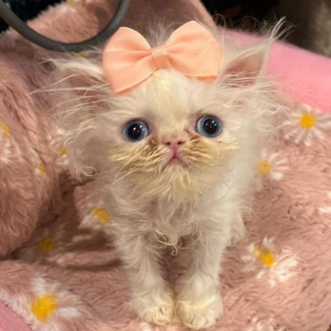
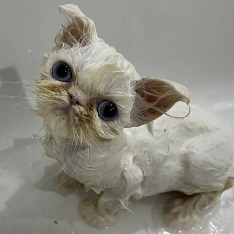
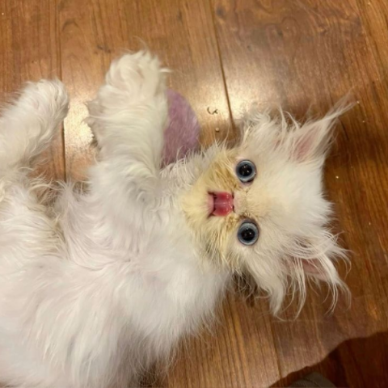

What's happening
The 3.5-month-old Persian kitten from Tampa Bay has taken over the internet with her scroungy fur, clumsy gait and sassy, soprano mews.
Link out here >

The intrigue
Maybe it's Amerosa's hilarious video directing, taking viewers through Wisp's bath time or stitching together clips of her more talkative moments.
Link out here >

The latest
Rags to Riches has peddled the fame into Wisp-themed T-shirt sales and fundraising campaigns to benefit the rescue, which Amerosa runs with the help of a few volunteers.
Link out here >